Start in Tails.
Install an intermediary Tails
In this step, you will install an intermediary Tails using the Tails USB image that you downloaded earlier.
Start GNOME Disks (also called Disks).
For example, you can press the Super key, then type disk, then choose Disks.Choose .


Plug in the intermediary USB stick on which you want to install Tails.
All the data on this USB stick will be lost.
The Persistent Storage of your Tails USB stick will not be copied to the temporary Tails.
A new drive appears in the left pane. Click on it.
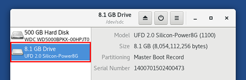

 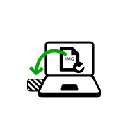
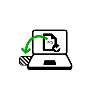
Click on the
 button in
the titlebar and choose
.
button in
the titlebar and choose
.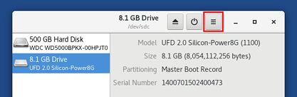
In the Restore Disk Image dialog, click on the file selector button.
Choose the USB image that you downloaded earlier.
Make sure that the USB image has an .img file extension.
If the image has an .iso file extension, it is not the correct image. Please go back to the download step for installing from Linux. download step for upgrading from Tails. download step for upgrading from Linux.
Click on the Start Restoring… button.
In the confirmation dialog click Restore.
Depending on your Linux distribution, you might be asked for your administration password.
The installation takes a few minutes.
After the installation is finished, click on the
 button.
button.
Congratulations, you have installed Tails on your USB stick!
You will now restart your computer on this USB stick. It can be a bit complicated, so good luck! But it might not work on your Mac model, so good luck!
If you are already in Tails, go directly to step 3: Verify that the other Tails is up-to-date.
Open these instructions on another device

In the next step, you will shut down the computer. To be able to follow the rest of the instructions afterwards, we recommend you either:


Open this page on your smartphone, tablet, or another computer (recommended).
Print the rest of the instructions on paper.
Take note of the URL of this page to be able to come back later:
https://tails.boum.org/install/clone?back=1https://tails.boum.org/install/win/usb?back=1https://tails.boum.org/install/mac/usb?back=1https://tails.boum.org/install/mac/clone?back=1https://tails.boum.org/install/expert/usb?back=1https://tails.boum.org/install/linux/usb?back=1https://tails.boum.org/upgrade/clone?back=1https://tails.boum.org/upgrade/tails?back=1https://tails.boum.org/upgrade/win?back=1https://tails.boum.org/upgrade/mac?back=1https://tails.boum.org/upgrade/linux?back=1
Restart on the intermediary Tails
Restart on the other Tails
Restart on Tails

 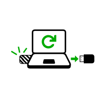
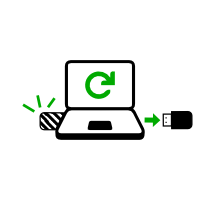
Make the computer start on the USB stick
Click on the Start
 button.
button.Press and hold the Shift key while you choose Power ▸ Restart.
In the Choose an option screen, choose Use a device.
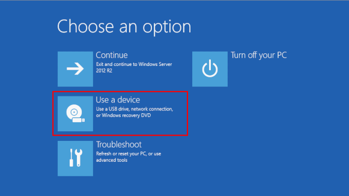If the Choose an option screen does not appear, refer to the instructions on starting Tails using the Boot Menu key.
In the Use a device screen, choose Boot Menu.
Windows shuts down, the computer restarts, and a Boot Menu appears.
Plug in your Tails USB stick shortly after choosing Boot Menu and while Windows is shutting down.
In the future, we We recommend that you only plug in your Tails USB stick while Windows is shutting down. Otherwise, a virus in Windows could infect your Tails USB stick and break its security.
Such an attack is possible in theory but very unlikely in practice. We don't know of any virus capable of infecting Tails. See our warning on plugging Tails in untrusted systems.
The Boot Menu is a list of possible devices to start from. The following screenshot is an example of a Boot Menu:

In the Boot Menu, select your USB stick and press Enter.
If the computer starts on Tails, the Boot Loader appears and Tails starts automatically after 4 seconds.

Most computers do not start on the Tails USB stick automatically but you can press a Boot Menu key to display a list of possible devices to start from.
If Windows 8 or 10 is also installed on the computer, you can refer instead to the instructions on starting Tails from Windows 8 or 10. Starting Tails from Windows is easier than using the Boot Menu key.
The following screenshot is an example of a Boot Menu:
This animation summarizes how to use the Boot Menu key to start on the USB stick:
The following instructions explain in detail how to use the Boot Menu key to start on the USB stick:
-
Shut down the computer while leaving the USB stick plugged in.
Shut down the computer and plug in the Tails USB stick.
Shut down the computer.
Plug in the other Tails USB stick that you want to install upgrade from.
Unplug your Tails USB stick while leaving the intermediary USB stick plugged in.
-
Identify the possible Boot Menu keys for the computer depending on the computer manufacturer in the following list:
Manufacturer Key Acer F12, F9, F2, Esc Apple Option Asus Esc Clevo F7 Dell F12 Fujitsu F12, Esc HP F9 Huawei F12 Intel F10 Lenovo F12 MSI F11 Samsung Esc, F12, F2 Sony F11, Esc, F10 Toshiba F12 others… F12, Esc On many computers, a message is displayed very briefly when switching on that also explains how to get to the Boot Menu or edit the BIOS settings.
-
Switch on the computer and immediately press several times the first possible Boot Menu key identified in step 2.
-
If the computer starts on another operating system or returns an error message, shut down the computer again and repeat step 3 for all the possible Boot Menu keys identified in step 2.
If a Boot Menu with a list of devices appears, select your USB stick and press Enter.
If the computer starts on Tails, the Boot Loader appears and Tails starts automatically after 4 seconds.
-
Shut down the computer while leaving the USB stick plugged in.
Plug in the other Tails USB stick that you want to install from.
-
Switch on the computer and immediately press-and-hold the Option key (Alt key) until a list of possible startup disks appears.
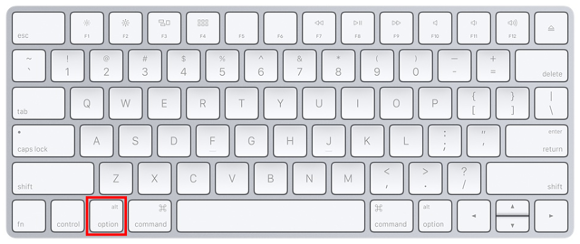
-
Choose the USB stick and press Enter. The USB stick appears as an external hard disk and might be labeled EFI Boot or Windows like in the following screenshot:

If the USB stick does not appear in the list of startup disks:
- Make sure that you have verified your download of Tails.
- Try installing again on the same USB stick.
- Try installing on a different USB stick.
- Try using the same USB stick to start on a different computer.
If your computer still does not display the Boot Loader, it might currently be impossible to start Tails on your computer.
-
If your Mac displays the following error:
Security settings do not allow this Mac to use an external startup disk.
Then you have to change the settings of the Startup Security Utility of your Mac to authorize starting from Tails.
To open Startup Security Utility:
Turn on your Mac, then press and hold Command(⌘)+R immediately after you see the Apple logo. Your Mac starts up from macOS Recovery.
When you see the macOS Utilities window, choose Utilities ▸ Startup Security Utility from the menu bar.
When you are asked to authenticate, click Enter macOS Password, then choose an administrator account and enter its password.

In the Startup Security Utility:
Choose No Security in the Secure Boot section.
Choose Allow booting from external media in the External Boot.
To still protect your Mac from starting on untrusted external media, you can set a firmware password, available on macOS Mountain Lion or later. A firmware password prevents users who do not have the password from starting up from any media other than the designated startup disk.
If you forget your firmware password you will require an in-person service appointment with an Apple Store or Apple Authorized Service Provider.
Read more on Apple Support about:
If the computer starts on Tails, the Boot Loader appears and Tails starts automatically after 4 seconds.
Troubleshooting
-
If no Boot Menu appears, or if your USB stick is not listed in the Boot Menu, refer to the instructions on starting Tails using the Boot Menu key.
-
If none of the possible Boot Menu keys from the previous technique work, or if your USB stick is not listed in the Boot Menu, refer to the troubleshooting instructions about Tails not starting at all.
-
If your USB stick is listed in the Boot Menu but the Boot Loader does not appear, or if Tails fails to start after the Boot Loader:
If your USB stick appears in the list of startup disks but the Boot Loader does not appear, or if Tails fails to start after the Boot Loader:
- Make sure that you have verified your download of Tails.
- Try installing again on the same USB stick.
- Try installing on a different USB stick.
- Try using the same USB stick to start on a different computer.
If your computer still does not display the Boot Loader, it might currently be impossible to start Tails on your computer.
-
If the computer stops responding or displays other error messages before getting to the Welcome Screen, refer to the troubleshooting section about Tails not starting after the Boot Loader. the troubleshooting section about Tails not starting after the Boot Loader.
-
If the computer displays the error message Error starting GDM with your graphics card, refer to our list of known issues with graphics cards.
Starting the computer using a Boot Menu key can be faster than starting the computer on Windows first and then on Tails. We recommend you learn how to start Tails using the Boot Menu key if you use Tails regularly.
Welcome Screen
One to two minutes after the Boot Loader, the Welcome Screen appears.

In the Welcome Screen, select your language and keyboard layout in the Language & Region section. Click Start Tails.
After 15–30 seconds, the Tails desktop appears.
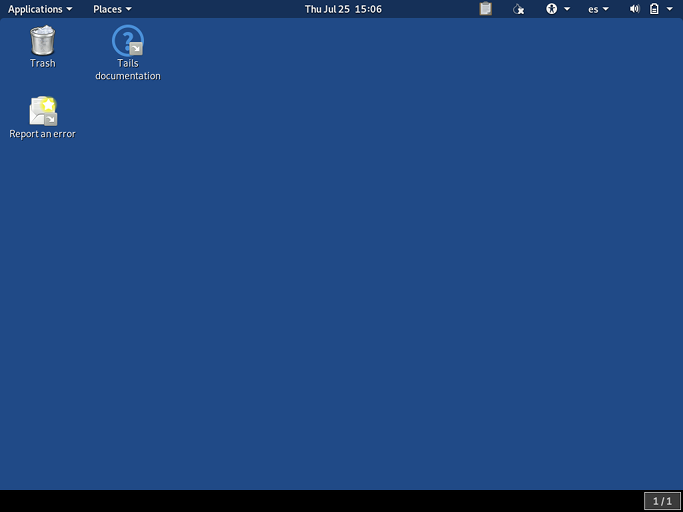
Install Tails
Upgrade your Tails
In this step, you will upgrade your Tails from the other intermediary Tails using Tails Installer.

Plug the new your Tails USB stick in the computer.
All the data on this USB stick will be lost.
Choose to start Tails Installer.
 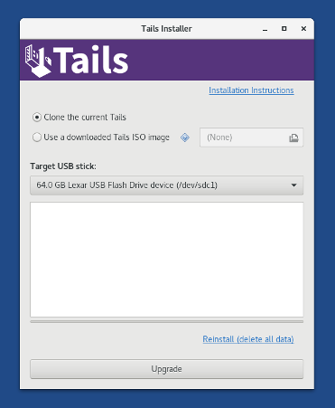
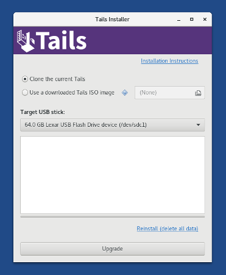
Choose the new your USB stick in the Target USB stick drop-down list.
To start the installation, click on the Install button. upgrade, click on the Upgrade button.
The Persistent Storage of your Tails USB stick will be preserved.
The Persistent Storage of the other Tails will not be copied.
Read the warning message in the confirmation dialog. Click Yes to confirm.
The installation upgrade takes a few minutes.
The progress bar usually freezes for some time while synchronizing data on disk.
After the installation finishes, close Tails Installer.

You are done upgrading Tails. You can now shutdown and restart on your Tails USB stick.
Thank you for staying safe!